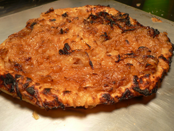
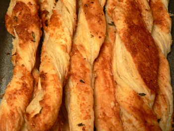

Upside-down onion tart
Although I’m far from mastering my regular pie crust, I decided I had better practice puff pastry while it was fresh in my head from class. And so, on Thursday night, I combined my d√©trempe and beurrage into a p√¢ton, gave it six turns over the course of the evening to leave it with thousands of layers, and stuck it in the freezer until I figured out what to do next.
In class, we used the dough for a lovely fruit tart, with alternating rows of kiwi and apricot on top of pastry cream. But I wanted something savory, as I always do, and I couldn’t find an appealing recipe in any of my usual sources. I figured I couldn’t go wrong by caramelizing a bunch of onions in my cast-iron skillet (with plenty of butter and salt, and a bit of sugar), putting in a circle of dough, and baking it in a very hot oven.

My delicious invention went off almost without a hitch. The most important thing with puff dough is to bake the hell out of it. Like any dough, it seems, you’re much safer if you lean towards overcooking; if it doesn’t turn black, it will be good to eat. I ended up putting this one back in the oven after my first slice. It was far from raw, but I wanted to feel the crispy layers shattering in my mouth, as they did with the parmesan-thyme cheese sticks that I made with the scraps.

I have much more puff practice to do before I’ll dare post a recipe for the dough itself. In the meantime, you can buy blocks of it from FreshDirect, and sheets of it from almost any grocery store. I genuinely enjoy the tedium of the turning, though, and will try to give it at least a few more tries.
Next time, I plan to try my favorite party food, black olive–pesto pinwheels. Do any of you have savory recipes you recommend for puff dough?
Comments
I love the look of your onion tart and the Parmesan cheese sticks look great, too. There are so many great things to do with this dough, it’s hard to narrow it down. How about a very simple disk of puff pastry with some thinly sliced vegetables and/or cheese on top, add some chopped herbs, salt and pepper, a drizzle of olive oil, bake at 475 degrees. Place a couple of them on top of lightly dressed greens as a first course, or put the dressed greens on top of each round as an hors d’oeuvre. You keep giving me more ideas than I can keep up with, you know that?
Here’s a recipe for Savory Tomato and Basil Palmiers from Barefoot Contessa.
(recipe originally posted on foodnetwork.com) – makes 20
1 1/4 cups sun-dried tomatoes, chopped
3 tablespoons chopped garlic (9 cloves)
5 cups basil leaves, packed
1 teaspoon kosher salt
1 teaspoon freshly ground black pepper
3/4 cup good olive oil
1 cup freshly grated Parmesan
1 sheet puff pastry, defrosted (recommended: Pepperidge Farm)
1 egg mixed with 1 tablespoon water, for egg wash
Preheat the oven to 400 degrees F.
To make the paste, place the sun-dried tomatoes and garlic in the bowl of a food processor fitted with the steel blade. Process for 30 seconds. Add the basil, salt, and pepper. With the processor running, slowly pour the olive oil into the bowl through the feed tube and process until pureed. Add the Parmesan and puree for 15 seconds. Set aside.
Unfold 1 sheet of puff pastry and place it on a lightly floured board. With a rolling pin, lightly roll the dough until it’s a 13-inch square. Using a knife, spread the paste over the top of the puff pastry. Fold the sides of the square toward the center so they go halfway to the middle. Fold them again so the 2 folds meet exactly at the middle of the dough. Then fold one half over the other half as though closing a book. You will have 6 layers. Slice the dough into 3/8-inch slices and place the slices, cut side up, on baking sheets lined with parchment paper. Brush each piece with egg wash and place in the oven. Bake for 6 minutes. Turn each pastry slice over and continue baking an additional 5 minutes.
I’ve made puff pastry only a few times, with great success-but much kitchen mess. I’ve got to try again, and neater this time…I really thought it was the best pastry I’d ever tasted…frshness a factor, I guess-it certainly wasn’t the prettiest, though!
Add a comment